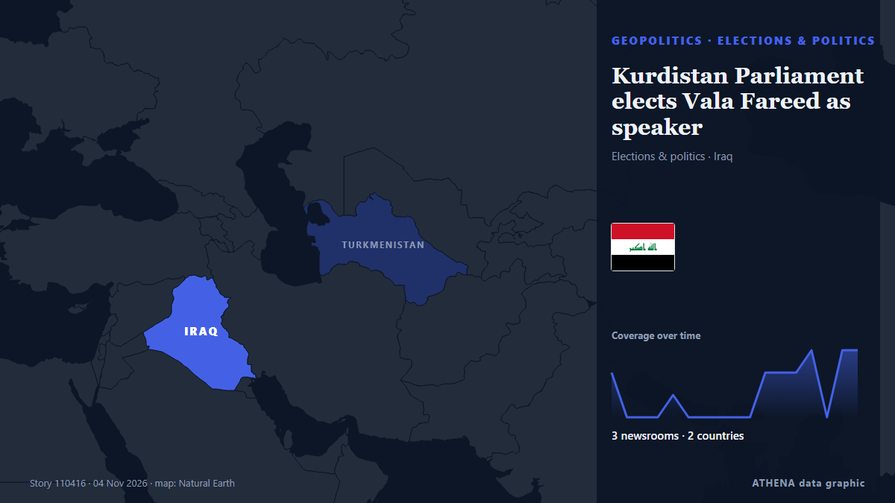

Kurdistan Parliament elects Vala Fareed as speaker

Shafaq News- Erbil The Kurdistan Parliament on Wednesday elected Vala Fareed as its new speaker, alongside Ramy Noori Syawish as deputy speaker and Muna Nabi Nader as secretary of the parliament's… from Shafaq News (English)
Reported independently by 3 outlets in 2 countries since 3 Nov, first by Kurdistan24 (English); coverage is fading. ATHENA rates the risk low (1.1/10), driven mainly by the severity of the harm described and the quality of the evidence. Confidence is 64% (moderate), with 3 independent outlets corroborating it and an average source reliability of 77%. Newsrooms by country: Iraq (21), Saudi Arabia (1). Coverage: 3 Nov to 5 Nov, 44 hours.
Why it matters: Security and diplomatic developments can shift alliances, trade and markets well beyond the countries directly involved.
What changed: 18 new reports from 3 newsrooms in the 24 hours to 5 Nov.
First reported as: KDP and Components Factions Urge Reactivation of Kurdistan Parliament
At a glance
Selected, scored and written by ATHENA's published methodology. No editor intervenes in individual events. How this is produced ›
| 03 Nov 11:08 UTC | 2 |
|---|---|
| 03 Nov 13:08 UTC | 0 |
| 03 Nov 15:08 UTC | 0 |
| 03 Nov 17:08 UTC | 0 |
| 03 Nov 19:08 UTC | 1 |
| 03 Nov 21:08 UTC | 0 |
| 03 Nov 23:08 UTC | 0 |
| 04 Nov 01:08 UTC | 0 |
| 04 Nov 03:08 UTC | 0 |
| 04 Nov 05:08 UTC | 1 |
| 04 Nov 07:08 UTC | 3 |
| 04 Nov 09:08 UTC | 3 |
| 04 Nov 11:08 UTC | 2 |
| 04 Nov 13:08 UTC | 3 |
| 04 Nov 15:08 UTC | 0 |
| 04 Nov 17:08 UTC | 3 |
| 04 Nov 19:08 UTC | 3 |
| 04 Nov 21:08 UTC | 0 |
| 04 Nov 23:08 UTC | 0 |
| 05 Nov 01:08 UTC | 0 |
| 05 Nov 03:08 UTC | 0 |
| 05 Nov 05:08 UTC | 0 |
| 05 Nov 07:08 UTC | 1 |
| 03 Nov 11:44 UTC | 0.0 |
|---|---|
| 05 Nov 00:06 UTC | 1.3 |
| 05 Nov 07:37 UTC | 1.1 |
Why these numbers
Importance
Risk
Confidence
The reporting — who reported it, and when
headline as published · opens the original- Kurdistan24 (English) · IraqKDP and Components Factions Urge Reactivation of Kurdistan Parliament
- Shafaq News (English) · IraqKurdistan Parliament schedules Wednesday session
- Shafaq News (English) · IraqPUK rejects "illegal" proposed Kurdistan parliament session
- Kurdistan24 (English) · IraqKurdistan Parliament To Vote On Presidency
- Kurdistan24 (English) · IraqIndependent MP Says Kurdistan Parliament's Paralysis Threatens Region's Political Future
- Kurdistan24 (English) · IraqKurdistan Parliament Elects Presidency, Ending More Than Two Years of Legislative Deadlock
- Shafaq News (English) · IraqPUK, New Generation boycott session as Kurdistan Parliament convenes
- Shafaq News (English) · IraqKurdistan Parliament elects Vala Fareed as speaker
- Kurdistan24 (English) · IraqElected Parliamentary Presidency Is Permanent, Not Interim، Says Speaker
- Shafaq News (English) · IraqKurdistan Parliament’s new leadership is permanent, speaker says
- Kurdistan24 (English) · IraqKDP Welcomes Kurdistan Parliament’s Reactivation, Accuses PUK and New Generation of Two-Year Political Obstruction
- Shafaq News (English) · IraqKDP accuses PUK, New Generation of paralyzing Kurdistan parliament
- Kurdistan24 (English) · IraqPresident Barzani Welcomes Reactivation of Kurdistan Region Parliament, Urges Boycotting Parties to Join
- Kurdistan24 (English) · IraqPM Barzani Congratulates Kurdistan Region Parliament Leadership on Reactivation
- Shafaq News (English) · IraqLeader Barzani urges boycotting parties to rejoin Parliament
- Kurdistan24 (English) · IraqKirkuk KDP Bloc: Parliament Reactivation Upholds Rule of Law
- Kurdistan24 (English) · IraqSenior KRG Official Links Kurdistan Parliament Reactivation to UN Review
- Kurdistan24 (English) · IraqKurdistan Region President Welcomes Reactivation of Kurdistan Region Parliament, Urges Political Unity
- Shafaq News (English) · IraqNechirvan Barzani urges all parties to join Kurdistan parliament
- Arab News · Saudi ArabiaIraqi Kurdistan selects parliament speaker after two-year deadlock
- Kurdistan24 (English) · IraqChristian Alliance Welcomes Kurdistan Parliament Reactivation
- Kurdistan24 (English) · IraqDiplomats To Meet Kurdistan Parliament Presidency